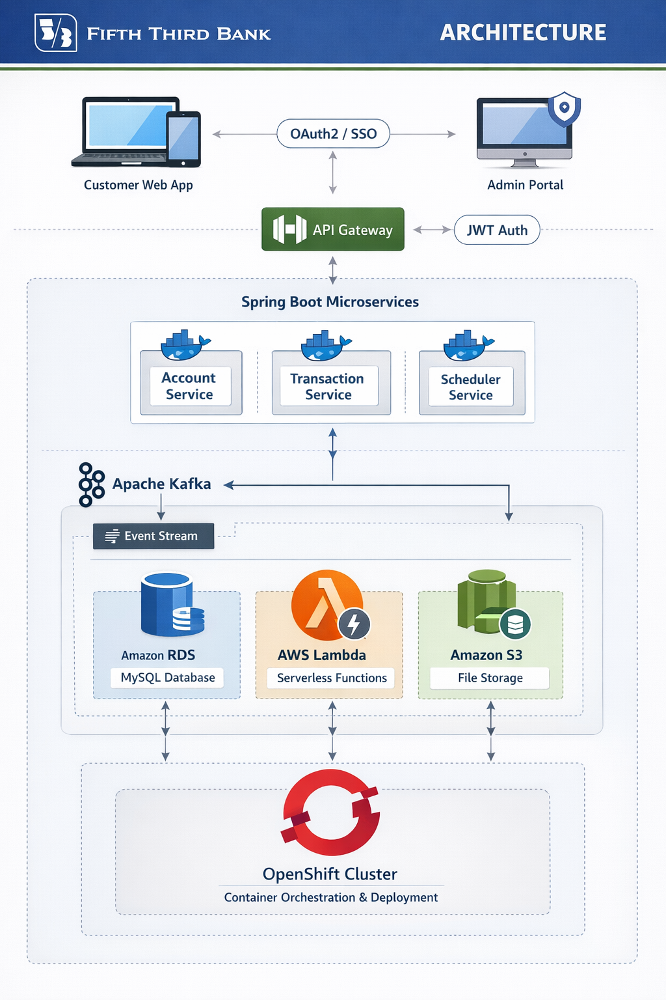

Architecture

Problem → Decision → Trade-off → Result
Problem
- High-volume transaction data required reliable processing and reconciliation
- Strict authentication/authorization for customer and admin access
- Need observability and safe deployments in banking environment
Decision
- Spring Boot REST APIs for accounts and transaction history
- OAuth2 + JWT + SSO with role-based access controls
- Kafka for asynchronous event processing between services
- Spring Scheduler for periodic reconciliation jobs
- Cloud monitoring (e.g., CloudWatch) and containerized deployments
Trade-offs
- Schedulers are simple and predictable, but must be designed for idempotency and retries
- Kafka improves throughput and decoupling, but requires careful ordering/error handling
Result
- Reliable transaction processing and background reconciliation
- Secure access controls aligned with financial security standards
- Operational visibility through monitoring and disciplined deployments
Tech Stack
Backend
Java, Spring Boot, Spring Security, REST, Scheduler
Messaging
Kafka producers/consumers, event-driven processing
Auth
OAuth2, JWT, SSO, RBAC
Cloud/DevOps
AWS, Docker, OpenShift, CI/CD, monitoring